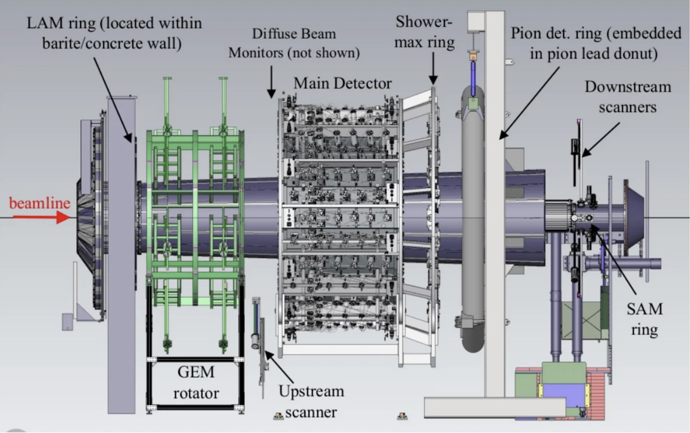
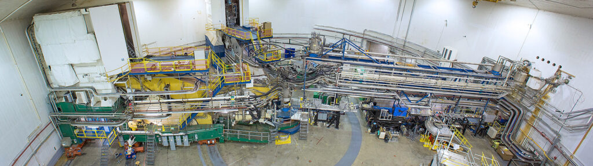
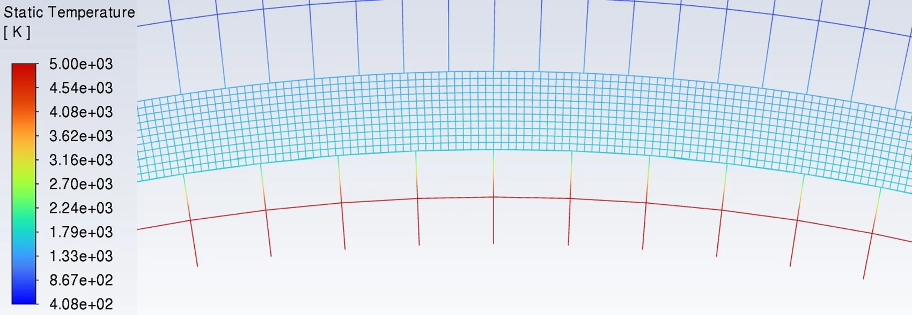
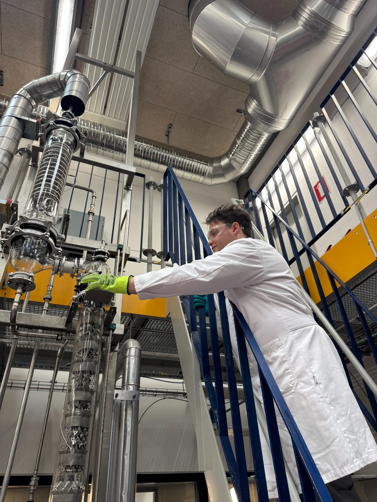

Experimental physicsThe MOLLER Experiment
Detector diagnostics, PMT characterization, shielding, and readout-chain troubleshooting at Jefferson Lab.
Explore →Virginia Tech · 2022–2026
Chemical Engineering · Physics · Nuclear Engineering · Mathematics
Proud to be a Hokie
At Virginia Tech, I pursued two undergraduate degrees, Chemical Engineering and Physics, with minors in Nuclear Engineering and Mathematics. I learned to combine fundamental physics, process engineering, and hands-on experimental work.
Just as important were the mentors, teammates, student organizations, and lifelong friendships that made Blacksburg feel like home.
Ut Prosim, “That I May Serve,” remains a guiding idea in how I approach engineering and life.


Experimental physicsDetector diagnostics, PMT characterization, shielding, and readout-chain troubleshooting at Jefferson Lab.
Explore →
EngineeringCFD modeling of cooling performance under intense plasma-facing heat flux.
Explore →
Process designIndustrial processes, heat integration, and the engineering tools that built my systems perspective.
Explore →For more information about my undergraduate research, projects, and experiences, explore my original Virginia Tech portfolio.
View undergraduate portfolio →